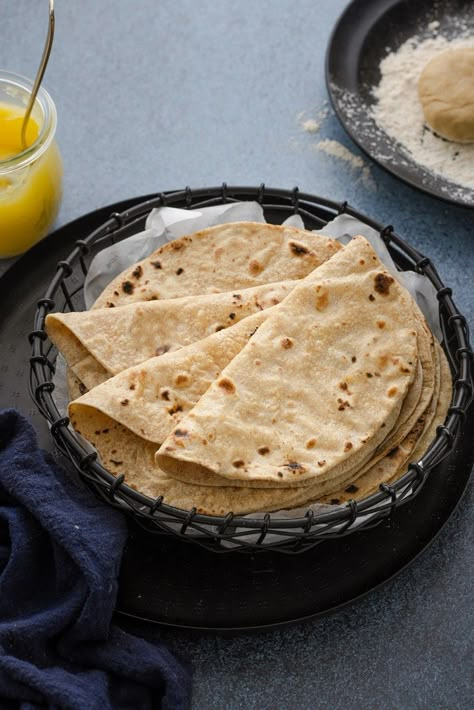

HOME
CHAPATI RECIPE

CHAPATI
Chapati is a flour made dish.
This dish goes into the category of bread. And it is famous in East Africa and India.
Ingredients
- 1 cup whole flour
- 1 cup all purpose flour
- 1 teaspoon of salt
- 3/4 cup of water or as needed
- 2 tablespoons of cooking oil
Steps
- Gather all Ingredients
- Mix whole wheat flour, all-purpose flour, and salt in a large bowl.
Mix until soft and add more water, if needed.
- Knead dough on a lightly floured surface until smooth.
- Divide the dough into 10 equal portions. And let rest for a few minutes.
- Now use a rolling pin to roll the dough balls out on a lightly floured surface until very thin.
- Heat a lightly grealed skillet and when it starts to smoke,
place a chapati in it. Cook until brown spots appear on the bottom,
about 30 seconds, then flip and cook the side which was up.
- Repeat to cook the the remaining chapatis.
HOME